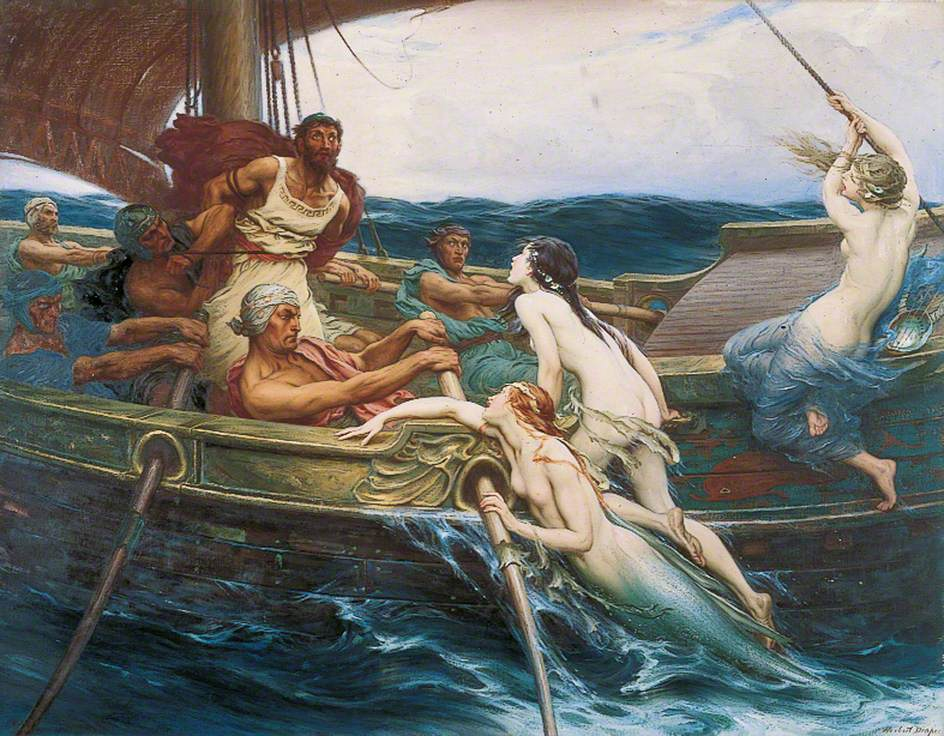
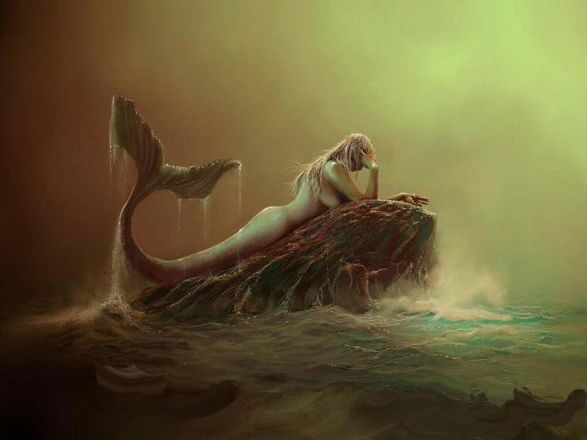
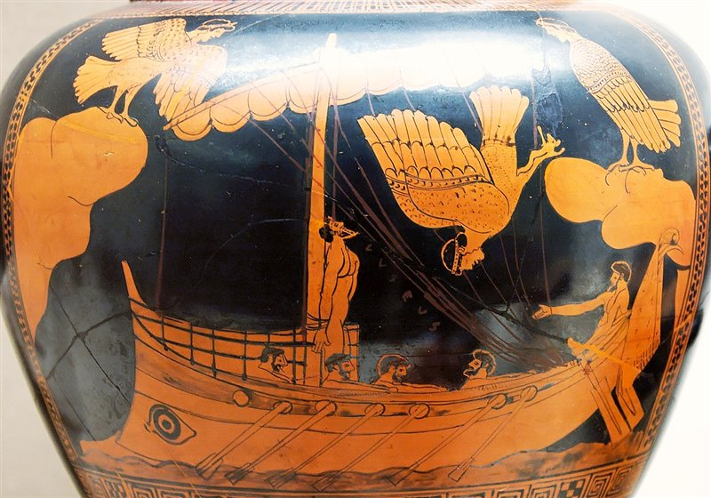
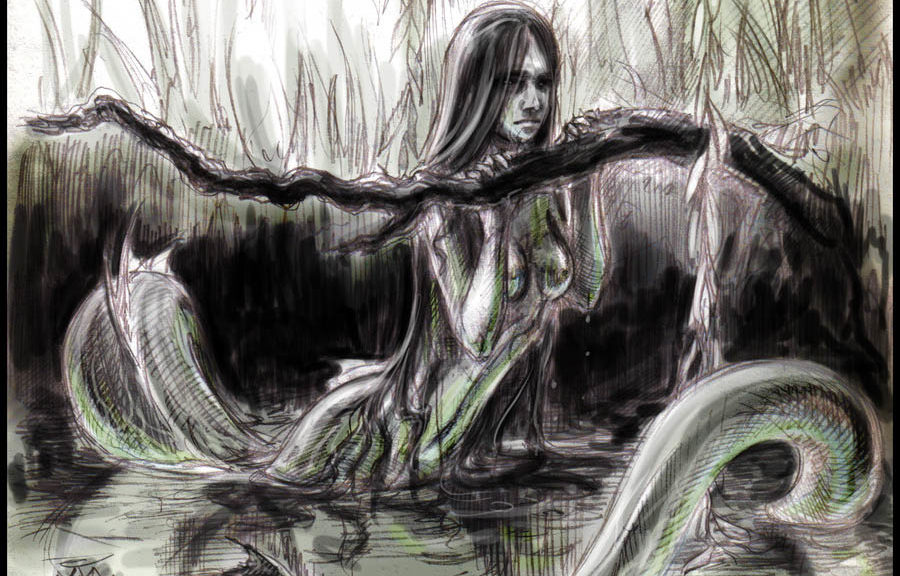
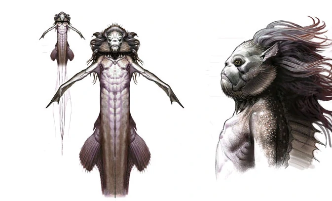
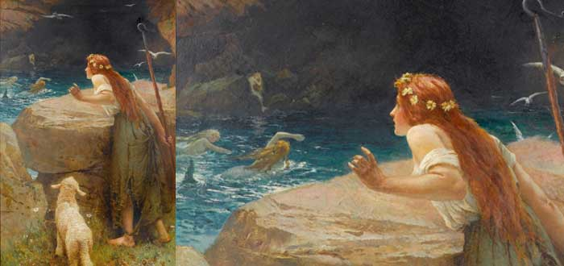
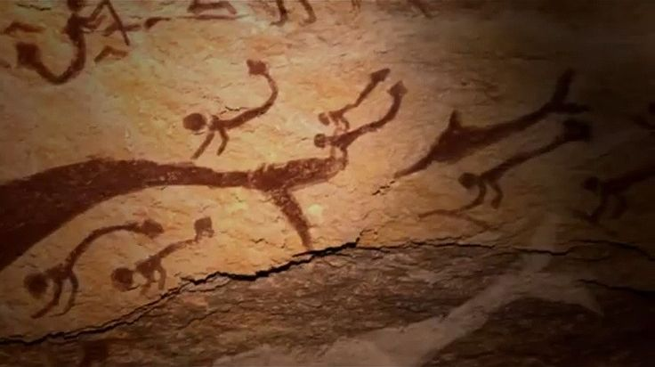
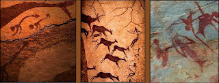
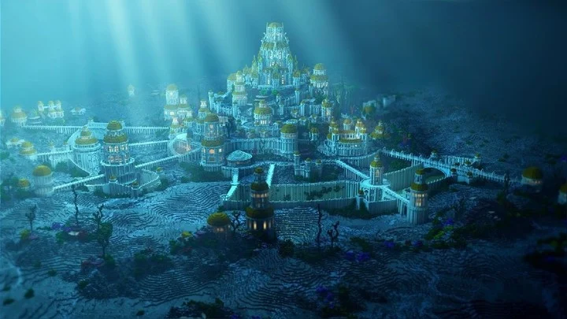

Las sirenas, o criaturas folclóricas con la cabeza y la parte superior del cuerpo de una mujer y la parte inferior del cuerpo de un pez, aparecen en muchas culturas en todo el mundo. Muchos han rastreado la concepción contemporánea de una sirena hasta la antigua figura griega de la Sirena, a pesar de que se pueden encontrar criaturas similares en todo el mundo.
Originalmente, en la Antigüedad clásica, se las representaba como seres híbridos con rostro o torso de mujer y cuerpo de ave (similares al Ba de la mitología egipcia) que habitaban en una isla rocosa; a partir de la Edad Media adquirieron apariencia pisciforme: hermosas mujeres con cola de pez en lugar de piernas que moraban en las profundidades.
Las sirenas eran criaturas peligrosas en la mitología griega. Las temibles figuras, que fueron descritas y representadas como mitad mujer, mitad pájaro, estaban posadas en los peñascos rocosos a lo largo del mar, cantando hermosas y seductoras canciones.
Esperaban hechizar a los marineros cercanos para lograr hundir los barcos y posteriormente comerse sus cuerpos.

Por supuesto, hay muchas versiones contradictorias. Muchas dicen que eran malas, otras dicen que realmente eran mujeres poderosas que tenían poderes.

Sirenas en la mitología griega y romana
En el marco de la mitología clásica, las sirenas son criaturas ligeramente difusas debido al remoto trasfondo de su origen, probablemente ligado al mundo de los muertos. Se trataba de seres con cuerpo de pájaro y rostro o torso de mujer, exactamente parecidas a sus parientes las Harpías, poseedores de una voz musical prodigiosamente atractiva e hipnótica con la que embrujaban a los navegantes que pasaban junto a sus costas y los conducían a la muerte. La tradición las hacía habitar en una isla rocosa del Mediterráneo frente a Sorrento, en el litoral de la Italia meridional (en ocasiones identificada con la isla de Capri).
Distintos relatos las hacen descender de los dioses fluviales Aqueloo —una versión las hacía proceder de su sangre cuando ésta fue derramada por Heracles— o Forcis, sea sin intervención femenina o con la de las musas Estérope, Melpómene o Terpsícore, relacionadas con el canto y el baile. Su número es también impreciso, contándose entre dos y cinco. Los nombres registrados incluyen Agláope (la de bello rostro), Telxiepia (de palabras aclamantes) o Telxínoe (deleite del corazón), Pisínoe (la persuasiva), Parténope (aroma a doncella), Ligeia (empleado luego por Edgar Allan Poe para el célebre cuento homónimo sobre una mujer de mortal belleza), Leucosia (ser puro), Molpe (la musa), Radne (mejoramiento) y Teles (la perfecta). En ocasiones se les atribuye el uso de instrumentos musicales como la flauta o la lira además de la voz.
El primer testimonio escrito que se tiene de ellas es su mención en la Odisea de Homero, pero ya figuraban en representaciones artísticas de antigüedad mucho mayor, a menudo en monumentos y ofrendas funerarios. Se presume así su vínculo con el otro mundo, siendo muy plausible que al principio representaran iconográficamente a los espíritus de los difuntos y/o que se las considerara encargadas de transportar las almas al Hades (función que posteriormente asumiría el dios Hermes en su papel de psicopompo).
Su fama deriva principalmente del célebre episodio que protagonizan con Odiseo (Ulises) en el citado poema homérico: el héroe aqueo, durante el periplo de regreso a su patria Ítaca y prevenido por la maga Circe, pasa junto a su isla y logra salir indemne del peligro de su canto, gracias a que se hace atar al mástil de su barco mientras que el resto de la tripulación usa tapones de cera para no sucumbir al hechizo. Con todo, las sirenas también figuran en otros episodios míticos, muchas veces con reminiscencias de ese anterior papel como deidades ctónicas de la otra vida: algunas versiones narran que acompañaban a Perséfone cuando fue raptada por Hades y que su apariencia bestial fue el castigo impuesto por Deméter por no proteger a su hija del dios del inframundo; en otras, el cuerpo alado es un don de Zeus para permitirles perseguir al raptor, y aun en otras es una pena impuesta por Afrodita por resistirse a la voluptuosidad o por envidia de su gran belleza. También se cuenta que perdieron sus plumas como castigo por retar a las Musas a una competición de canto que perdieron, aunque esta anécdota supone obviar su ascendencia materna.
Desde el asentamiento mismo del mito según esta acepción, es costumbre firmemente aceptada el asumir que las sirenas embelesaban a los marineros para que se estrellaran contra los escollos cercanos y así poder devorarlos, ya que Homero describe cómo las orillas aparecen repletas de huesos humanos. No obstante, nunca se menciona expresamente que el objetivo de estas criaturas sea el asesinato y la antropofagia, y se detalla que esos huesos todavía tienen la piel adherida que "se pudre al sol". Unido a que (según el texto de la Odisea) el contenido de la canción de las sirenas es la invitación al placer y al conocimiento, no pocos estudiosos apuntan que cabría la posibilidad de que se limitaran a atraer a los viajeros y éstos acabaran por morir de inanición en la isla, absortos en el éxtasis de esas subyugantes voces que les hacían olvidar todo lo demás. En cualquier caso, la naturaleza de las sirenas está siempre imbuída de cierta perfidia seductora.
Los antropólogos que suscriben el parentesco de las sirenas con el más allá plantean una hipótesis: en paralelo con arquetipos de otras culturas, quizá estos seres fueran inicialmente genios que guardaban el paso hacia las Puertas de la Muerte. Puertas que muy bien podrían estar simbólicamente emparentadas con el paso de Escila y Caribdis, al que las sirenas están próximas geográficamente según las fuentes. Eurípides, en una estrofa del coro de Helena (verso 168) las llama παρθηνικοι κοραι parthenikoi korai, ‘jóvenes doncellas’; en este fragmento se apoyan Laurence Kahn-Lyotard y Nicole Loraux para incluirlas dentro de las figuras del Más Allá, identificándolas con las cantoras de las Islas de los Bienaventurados descritas por Platón.
En cuanto a su desaparición, la versión más extendida es que, cumpliéndose un oráculo de la diosa Gea, cuando Odiseo (u Orfeo en el caso de las Argonáuticas) se resistió al efecto de sus voces, las sirenas cayeron al mar y se convirtieron en riscos o perecieron. En esta última variante, el cadáver de una de ellas, Parténope, fue arrastrado por las olas hasta tierra firme y en torno a su sepulcro se fundó la actual ciudad de Nápoles.

Sirenas de otras mitologías
Pueblos eslavos:
Las rusalkas son la contraparte eslava de las sirenas y las náyades griegas.
La naturaleza de las rusalkas varía entre las tradiciones populares, pero según el etnólogo D.K. Zelenin todas comparten un elemento común: son los espíritus inquietos de los muertos inmundos. Suelen ser los fantasmas de mujeres jóvenes que murieron de forma violenta o prematura, quizás por asesinato o suicidio, antes de su boda y especialmente por ahogamiento. Se dice que las rusalkas habitan en lagos y ríos. Aparecen como hermosas mujeres jóvenes con cabello largo de color verde pálido y piel pálida. Se les puede ver después del anochecer, bailando juntas bajo la luna y llamando a los jóvenes por su nombre, atrayéndolos al agua para ahogarlos.

En las Islas Británicas:
Las sirenas se observaron en el folclore británico como presagios de mala suerte. Las sirenas también podrían nadar en agua dulce y llegar hasta los ríos y lagos y ahogar a sus víctimas, haciéndoles creer que eran personas que se estaban ahogando. En ocasiones, las sirenas podrían curar enfermedades. Algunas sirenas eran descritas como monstruos grandes de hasta 600 m.
En Irlanda:
A los sirénidos los llaman merrows. Creen que el número de hembras es superior al de los machos, aunque estos son más feos que sus compañeras: un merrow masculino poseen dientes puntiagudos y rostro semejante a un cerdo. Todos los merrows se caracterizan por las membranas de sus manos, su hostilidad hacia los humanos y sus prendas mágicas, que les permiten atravesar cualquier corriente oceánica. Todo hombre o mujer que le roba la prenda a un merrow tiene poder sobre él, y en muchos relatos, varios hombres esconden estas prendas obligando a las hembras a casarse con ellos. Los hombres ganan así esposas bellas y ricas (debido a los botines que las sirenas obtienen con los naufragios), pero si la esposa merrow recupera su prenda, la llamada del mar será tan fuerte que acabará abandonando a sus hijos y a su marido.

Mitología escocesa:
Hay una sirena llamada Ceasg o "doncella de las olas". La parte inferior de esta sirena es la de un salmón. Se dice que a aquellos que la capturan les concede tres deseos si la devuelven al agua, pero cuando un hombre se enamora de ella, la mujer-salmón lo seduce y lo arrastra a las profundidades. Famosos son también en Escocia los selkies, hadas marinas que en el mar adoptan la forma de una foca, pero al llegar a la tierra se deshacen de sus pieles para tomar forma de mujer. Al igual que con los merrows, todo hombre que quiera una esposa selkie solo tiene que robarle la piel de foca, pero si ella encuentra la piel, volverá al mar para siempre. Los hijos nacidos de la unión de hombres y selkies tenían membranas que unían los dedos de sus pies o sus manos.

En China:
En algunos cuentos antiguos, las sirenas son una especie cuyas lágrimas se convierten en perlas preciosas. Las sirenas también pueden tejer un material muy valioso que no solo es ligero sino también hermoso y transparente. Debido a esto, los pescadores siempre tenían ganas de agarrarlas, pero el canto de las sirenas lo dificultaba. En otras leyendas chinas, las sirenas son unas criaturas maravillosas, hábiles y versátiles y estaba mal visto que los pescadores quisieran capturarlas.
La hipótesis del simio acuático
Quiénes somos, de dónde venimos y a dónde vamos. Formulada en 1942, la hipótesis del simio acuático explica la evolución humana mediante un eslabón perdido: homínidos que junto al mar, durante casi un millón de años, desarrollaron las capacidades que nos distinguen como especie. Hombres ya o protohombres volvimos después a conquistar el medio terrestre.
Indicando que este hipotético hecho habría influido en su evolución, debido a que en este ambiente habrían tenido que obtener la mayoría de sus alimentos de la zona costera y lagunas poco profundas tierra adentro, antes de que sus descendientes homínidos regresaran a una existencia más puramente terrestre.
Documental
En un documental creado por Animal Planet se menciona que en el año 2004, unos jóvenes de Washington observaron uno de los varamientos masivos de ballenas en EE. UU. Uno de estos chicos poseía una cámara, con la que grabó atentamente, cuando inesperadamente se percató de algo, que no era una ballena. El video no se hizo público hasta ahora.
El departamento de pesca, envío el caso, donde el biólogo marino Bryan Mccormick, El doctor Mccormick y su equipo sospecharon que la marina había retomado el uso del sonar (acción que sería la causa de estos varamientos).
Dos miembros del equipo deciden revelar lo que la marina descubrió, pero que ocultó durante años. El Dr. Paúl Robertson, menciona que al momento de llegar al varamiento solo se llevó al laboratorio, se comenzó a tomar muestras de ADN y tenía una dentadura omnívora, mientras que un mamífero acuático tiene homodoncia, es decir, sus dientes tenían la misma forma y tamaño. Y ningún mamífero marino es omnívoro.
El cráneo tenía un agujero en el hueso frontal, sería un hueso respiratorio, el aguijón de mantarraya que había sido claramente esculpido y manipulado para sostener algún objeto. Por lo tanto este espécimen ha aprendido a usar partes de otro animal como herramientas para matar peces. Poseía las mismas caderas que el de un animal erguido, se encontraba una hemoproteína que guarda oxígeno en los músculos.
La Dra. Leanne Visser reconstruyó y reveló que las órbitas del cráneo eran más grandes que las de cualquier humano contemporáneo; los ojos eran muy grandes y poseía una cresta craneal.
Descubrió que la parte usada para interpretar sonidos tenían un gran tamaño. Esto indicó a los científicos que el sonido no identificado, el Bloop, podía tratarse de esta nueva criatura.
Pero al término de esta investigación los científicos tuvieron problemas para sacar a la criatura de Sudáfrica, la policía confiscó todo, con la documentación adecuada: “Confiscación de un descubrimiento de importancia nacional”. Y lo único que le quedaron a estos, fueron las grabaciones.
Video:
Pinturas rupestres
Los restos humanos más antiguos del mundo han sido descubiertos en Sudáfrica. Algunos paleoantropólogos sugieren que el ser humano se originó en África meridional hace unos 115.000 años. Se estima que los bosquimanos o San han residido en las regiones costeras occidentales con anterioridad al primer milenio antes de Cristo. Estos grupos vivían en comunidades pequeñas, de 20 a 80 individuos, deteniéndose en su nomadeo cuando encontraban suficiente comida y agua en la zona. Entonces, establecían derechos temporales sobre la región y cuando agotaban sus recursos, bien por el cambio de la temporada climática o bien porque los agotaban, levantaban el campamento y continuaban buscando comida en otra parte.
La cultura San estaba basada hasta cierto punto en la mitología que había ido transmitiéndose de generación a generación y que se conservaba de manera oral y en las pinturas de las cavernas. Las más viejas de estas representaciones pictóricas han sido datadas en una antigüedad de 70.000 años. Los pigmentos se fabricaban con polvo mineral fijado con grasa. Son pinturas simples y directas, mucho más antiguas que las que se han encontrado en Europa. No cumplían solamente una función decorativa sino que tenían una significación espiritual como puertas de entrada al mundo de los espíritus.
Hacia el siglo XVI de nuestra era, la forma de vida de los San permaneció inalterada por influencias exteriores. A partir de ese momento comenzaron a aparecer prácticas de pastoreo y agrícolas que implicaron la fijación de la población a la tierra por parte de otros grupos étnicos que habían ido llegando a la región. Por supuesto, los conflictos por el uso de la tierra no tardaron en aflorar pero los San, careciendo de armas para hacer valer sus reclamaciones, acabaron poco a poco arrinconados en los parajes más inhóspitos del desierto del Kalahari, en Botswana, donde continúan hoy día.
Las sirenas han sido parte integral del folclore de Karoo durante años. Historias que se transmiten de padres y abuelos, advirtiendo a los niños de no ir cerca de aguas profundas, en caso de que la sirena los arrastre y les ahogue. Al igual que Europa, cuentos de marineros atraídos a su muerte por sirenas hermosas, el Karoo tiene muchas historias de horror de personas que han desaparecido después de ir a buscar agua del río y es difícil saber si las advertencias de sirenas comenzaron como una forma de proteger a los niños de los peligros de aguas profundas y se desarrollaron a partir de ahí, o si tienen un origen más profundo. Lo cierto es que una vista aérea del Karoo nos deja ésta sorprendente figura mitad humana mitad pez.


Los nativos cuentan que años atrás, toda esta zona de Karoo, había estado bajo el mar y que hasta ellos mismos han visto fósiles de conchas de mar incrustadas en las rocas.
En lo más profundo del pequeño Karoo, se nos muestran pinturas rupestres de los San en las paredes de las cuevas, en las montañas, que representan criaturas sirena. Estas enigmáticas pinturas han desconcertado a los arqueólogos durante años. ¿Significa esto que el pueblo de San vio sirenas? ¿Esto podría ser el origen de las historias que hemos escuchado enAmalienstein? Y ¿por qué las pinturas de sirenas aparecen sólo aquí en el Karoo, un lugar de tal sequedad?
Las sirenas han estado con nosotros durante miles de años, grabadas por los babilonios hacia el 2000 a. C. y aún hoy se habla de ellas en pequeñas aldeas costeras de Irlanda.
Es interesante notar que las sirenas aparecen en historias de todo el mundo. En la antigua romana, las sirenas de la mitología griega y egipcia aparecen junto con otras criaturas mitad humanos mitad animal como el Minotauro y la esfinge.En Europa, la famosa Sirenita de Hans Christian Andersen es un cuento de hadas, se ha convertido en un símbolo de Copenhague. Y en la mitología africana hay muchas referencias a los espíritus de agua, agua-doncellas y animales de agua.
Atlantis
Según los diálogos de Platón, la Atlántida era una tierra al oeste de las columnas de Hércules (el estrecho de Gibraltar). Tuvo un gran poderío económico, social y militar, y llegó a dominar Europa occidental y el norte de África hasta que la ciudad de Atenas consiguió detenerla.
En ese momento, una catástrofe sin descripción hundió la isla y todos los ejércitos de que disponía. La Atlántida fue borrada por completo del mapa y de la historia.
Desde la Edad Media, el mito fue considerado una alegoría, pero a partir del siglo XIX, gracias al romanticismo, comenzaron a surgir hipótesis de emplazamientos reales.
Un continente sumergido en el Atlántico
Si somos fieles al relato (una isla más allá de las columnas de Hércules), nuestra mirada va directa al océano Atlántico. La primera teoría localiza allí la Atlántida, cuyos montes más altos no llegaron a cubrirse y corresponderían con las islas que conforman la llamada Macaronesia. O sea: Azores, Madeira, Islas Salvajes, Canarias y Cabo Verde.
La idea de un continente de tal tamaño que desapareciera repentinamente es completamente inverosímil. Esta teoría es foco de la mayoría de ideas ocultistas y otras relacionadas con vida extraterrestre.

Viejas anécdotas sobre sirenas
“Mi bisabuelo nació en 1900, nos contaba, que de niño, por ahí de 1910, trabajó con su padre en Las Peñas, lo que ahora se llama Puerto Vallarta. Ellos trabajaban en carga y descarga de suministros y materiales para las compañías mineras de Cuale y San Sebastián.
Él contaba que una tarde su padre le pidió que lo esperase en el puerto mientras él iba a registrar unos materiales que acababan de recibir. Sin embargo, su padre tardó tanto que los pocos trabajadores que estaban ahí comenzaron a irse y empezó a oscurecer. Mi bisabuelo contaba que empezó a caminar tratando de encontrar el camino a donde su padre y él se hospedaban. Y mientras caminaba vio a una mujer sentada de espalda en una peña, la mujer tenía el pelo largo y rojizo, vio que su piel era muy blanca. Él se acercó lentamente pensando que era una mujer, pero cuando estaba a unos metros de llegar, la mujer volteó y se vieron cara a cara. Mi bisabuelo cuenta que está mujer tenía escamas en las mejillas, que no tenía nariz respingada, sino unos simples orificios, no tenía cejas y que sus ojos eran lisos como de pescado. En el instante la mujer se lanzó al mar y pudo ver que en lugar de pies tenía una cola grande de pescado.
Mi bisabuelo deduce que era una sirena, pero que de ninguna manera es mitad mujer y mitad pescado, más bien parecía un animal con apariencia de mujer.
Cuando se lo contó a mi tatarabuelo, le dijo que jamás se lo contara a nadie porque no le crearían. Años más tarde mi tatarabuelo dejó de creer esa historia, sin embargo mi bisabuelo jamás lo olvidó. Ya que él dice haberla visto.
Esta historia es real.”
“Mi bisabuelo, era marinero, y se sabía un buen de leyendas, pues la mayoría de su vida la pasó en el mar, él le contaba a mis abuelos que adentrarse en el mar, no era algo placentero, les contó , que en las fuertes tormentas, ellos apreciaban, seres, de piel gris, que los observaban, decía que estaban sólo flotando como esperando a que el barco se hundiera, más nunca los atacaron, o al barco. También decía que antes, eran como más salvajes estas especies, pues las leyendas entre los marineros decían que su remoto "paraíso" era el triángulo de las Bermudas, y que para que las embarcaciones lograrán pasar, estas debían tener una sirena en la proa, ya sea disecada, o tallada en madera, la cual representaba una advertencia para estos seres.
Mi bisabuelo, nunca los llamo sirenas, si no monstruos, también contó que tenían ojos completamente negros. Me hubiera gustado haber conocido a mi bisabuelo, supongo que él sabía bastante.”
“Recuerdo que tenía como 7 años, actualmente tengo 17, recuerdo perfectamente que fue una salida a la playa con toda mi familia, planeamos acampar a orillas del mar pero muchos incluyendo a mi madre no estuvieron de acuerdo con la idea ya que podía ser peligroso debido a que podían haber caimanes rondando la zona (según ellos) bueno cosas así, en fin quedamos en hacer una pequeña fogata platicar un rato y luego ir a dormir. Eso jamás pasó pues luego de cenar (era el momento en que haríamos la fogata) todos dijeron estar cansados y sin ganas, yo y mis primos estábamos muy desilusionados ya que éramos los únicos niños pequeños y queríamos más diversión y acabamos por convencer a unos tíos de quedarse en unas sillas más o menos cerca de la orilla del mar mientras nosotros jugábamos sin alejarnos tanto.
Bueno estábamos corriendo por todos lados sinceramente el clima era muy fresco pero para nada helado, yo estaba muy feliz y no tenía sueño para nada, mis tíos platicaban a lo lejos y no prestaban mucha atención así que yo y uno de mis primos (el más pequeño tuvo miedo de ir) decidimos ir hasta donde el mar toca la arena mojarnos los pies y regresar, bueno corrimos y al llegar a la orilla nos acercamos lo suficiente para que nuestros pies tocaran el agua estuvimos ahí aproximadamente unos 10 segundos pues no queríamos ser descubiertos, cuando volteamos para regresar recuerdo escuchar un sonido extraño (parecido al llanto de una ballena) pero no hay ballenas tan cerca de la orilla, mi primo salió corriendo y yo caminé lento y no paraba de voltear hacia atrás hasta que por fin lo vi, la criatura dio un salto rápido para luego volver al agua. Fue extraño parecía delfín pero no hay manera que un delfín emitiera tal sonido y su cola era mucho más ancha, y en efecto tenía brazos, recuerdo salir corriendo y jamás se lo comenté a nadie y no sé si la poca luz me hizo ver las cosas de manera distinta y era otro animal, pero posiblemente ese día yo estuve a metros de una sirena.”
“Cuando tenía 5 años mis padres me llevaron a la playa por que ahí iba a ver un evento de algo no recuerdo, más tarde fuí jugar en un lugar más lejitos, que estuviera solo para poder jugar, fui con otra niña, a lo lejos vi algo cerca de algunas piedras, al principio solo vi su espalda pero esta después volteó hacia donde estaba yo, parecía como si pudiera sentir mi presencia, estuvo observandome un corto tiempo pero no estoy segura de que realmente me mirara o del que pudiera verme pues sus ojos eran completamente negros, tal vez solo se mantenía fija al lugar donde sentía mi presencia, esta no tenía cabello o algo parecido al como las imaginan y su piel tampoco era como la de nosotros si no que tenia escamas, tenía la silueta de alguien como nosotros pero estaba llena de escamas, tampoco tenía una nariz como la nuestra, solo tenía dos orificios y ni siquiera recuerdo si tenía una boca, no se como explicar como es que se le miraba, lo ultimo que recuerdo que se veía como si me mirara , esto solo fue por un corto tiempo entonces esta desapareció en lo que di un parpadeo pues yo me mantenía fija mirándola, la busque por un largo tiempo, la volví a mirar a lo lejos, muy lejos, sentí como esta volvió a poner sus ojos, esta se adentró al agua y claro que le miré una cola esta si era como la de las sirenas de las películas jaja cuando le conté a mis padres me dijeron que solo era mi imaginación o que era por pasar mucho tiempo en el sol, nunca nadie me creyó porque solo tenía 5 años, pero nunca pude disfrutar de las películas de sirenas por que yo decía que ellas no eran así realmente, siempre pensaron que estaba loca por decir eso y hasta la edad que tengo ahora sigo recordando perfectamente ese dia inclusive algunas veces aparece en mi sueños, no entiendo como es que aun sigo recordando y soñando con eso, he hecho dibujos de como es que recuerdo pero pues aca no puedo poner una foto en comentario.”
“En mi pais, aqui en Peru, se cree que hay sirenas en los Lagos, y que cuando están Solas, encantan a los hombres que van de paso, de manera que los llevan al lago y se lo quedan.
Me pasó que me contaron sobre un joven, por allá en la sierra del Perú, que estaba de excursión con sus compañeros de clase. Todos pararon en un lago, se dispersaron para descansar y explorar acordando encontrarse en cierto punto. Este joven nunca llegó. A las horas fue reportado desaparecido y fue buscado por casi todo el pueblo más cercano. Cuando creyeron que se podría haber ahogado, mandaron por buzos. Ellos entraron al lago y lo encontraron parado con las manos pegadas al cuerpo y con un rostro sereno, como si durmiera, en lo profundo de las aguas. Los buzos lo sacaron cuidadosamente, pero al momento en que su cabeza sale del agua, empieza a sangrar por la nariz y los oídos Se cree que fue encantado por la sirena de este lugar y que una vez suyo, pertenecía también al lago. El joven murió. Y hasta ahora no pueden explicar cómo es que su cuerpo estaba de pie y con vida (porque los buzos dijeron sentir un pulso) en el fondo del lago.”